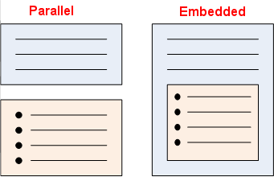

Whether a list is contained within a paragraph, or whether it
occurs as a separate parallel block after the paragraph, depends on the
context. If the paragraph contains a lead-in to the list, then that list is
bound to the paragraph, and the list should be a child of the paragraph.
DITA permits you to use a structure for a list of items where the list
exists within a paragraph element. You can alternatively create a list
structure without a surrounding paragraph. In other words, both of the
following are valid.
The best choice is the structure that is semantically correct, and that
will depend upon the context.
In most cases, the second option (a standalone list structure) is
correct semantically, because most lists do not logically fall within a
paragraph, and cannot be logically be surrounded by a paragraph. Further, if
the paragraph has no content other than the list, then it is probably
superfluous.
However, in some cases, the list may logically belong within the same
idea as the surrounding paragraph. In such cases, there will be text within the
paragraph element before and/or after the list element. For example:
<p>The four turbo-charged models
<sl>
<sli>XRW</sli>
<sli>XRW Super</sli>
<sli>Lumberer XT</sli>
<sli>Liberty GT</sli>
</sl>
are the most expensive of their makes.</p>
When considering content re-use, the paragraph in the preceding example
could be re-used, and would always include the list, as it is part of the same
idea. The list could also be re-used without the paragraph text. But the
paragraph text could not be re-used without the list.
Some people treat lead-in sentences, or stem sentences, in the same way.
If a stem sentence ends with a colon, then it
should only be re-used with the list it supports. Therefore, the stem sentence
and the list should be in the same semantic element.
Comparison between parallel and embedded lists

Note
There are some conflicting requirements when the content needs to be
localised.
Including a block nested inside a paragraph, such as in the preceding examples,
will create some problems for translators. This creates a dilemma which may
eventually be solved by advancements in software tools. If you are writing for
translation, avoid including text after a nested block inside another block
element. The guidelines contained in the
Best Practice for Leveraging Legacy Translation Memory when
Migrating to DITA (Joseph & Raya, 2007) whitepaper produced by the
OASIS DITA Translation Subcommittee should be followed when writing for
translation.
Rationale
There is mixed opinion on this issue on the DITA forums. One of the
strongest views expressed varies from my own views, because I think it doesn't
take into account the semantic binding of a stem sentence to its following
text. The view that block items should not be used as inline items is a furphy,
because there is not neat separation of block and inline in DITA. For example,
a list item is a block element, but it appears within an unordered list
element, which is a block element. A list is just that: a list. Lists can be
inline lists, bulleted lists, or numbered lists. Whether the list is displayed
in separate paragraphs or on the one line is a matter for processing, not for
authoring.
The next issue (which you didn't mention) is nesting <ul> and
other lists inside <p>, such as:
<p>Please remember to eat at least two of the
following every day:
<ul>
<li>apple</li>
<li>orange</li>
<li>lemon</li>
<li>tomatoe</li>
</ul>.<p>
Aside from the messed up output this will generate (unless you code
intelligence in the stylesheets to insert punctuation etc) it will have
negative translation side effects (is <ul> a block or inline element?) I
think we listed <ul> as a block element, so it should not be used as an
inline element. I often find users marking up as follows:
<p>In order to install Acme Pro Plus Plus,
your system must meet the following requirements:
<ul>
<li>Pentium 4 CPU or later</li>
<li>1 GB RAM or more</li>
<li>At least 350 MB free disk space</li>
</ul>
</p>
IMO, this should be marked up as follows, with the <ul> being
a following sibling of <p>, not a child of <p>:
<p>In order to install Acme Pro Plus Plus,
your system must meet the following requirements:</p>
<ul>
<li>Pentium 4 CPU or later</li>
<li>1 GB RAM or more</li>
<li>At least 350 MB free disk space</li>
</ul>